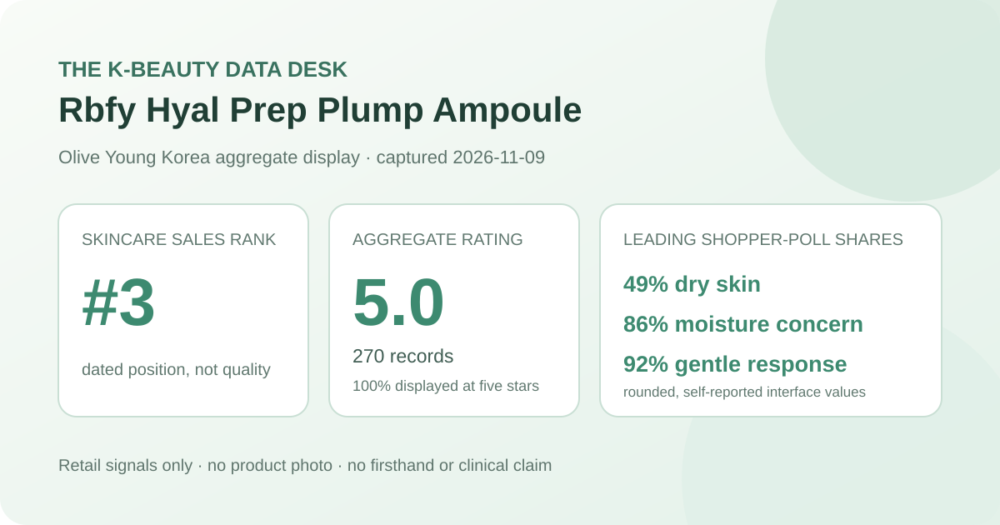
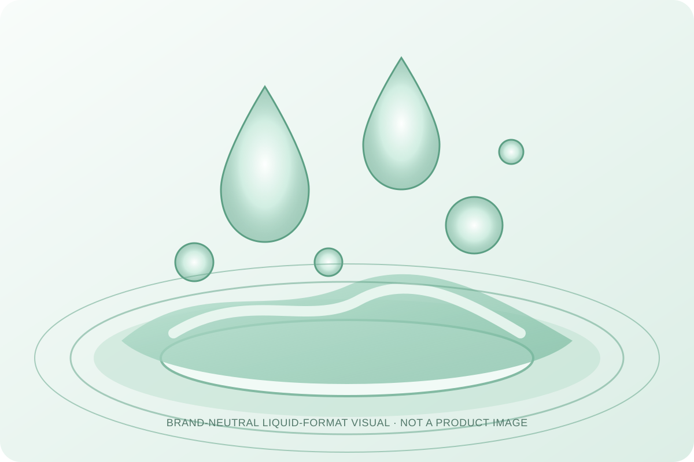

Data captured November 9, 2026. Olive Young Korea displayed the Korean title “리바이포유 히알프렙 수분탱글앰플 45ml”; this article uses “Rbfy Hyal Prep Plump Ampoule” as a readable English label. The analysis uses only the retailer's displayed title, ranking position, aggregate rating, star distribution, and shopper polls. It does not copy or translate individual review text, reviewer names, or photos, and it makes no claim of firsthand use.

The short version: Rbfy Hyal Prep Plump Ampoule appeared at number 3 in the captured skincare sales ranking. Its product header and official review view agreed on 5.0 out of 5 from 270 records. The displayed distribution placed 100% in the five-star row. Dry skin led the skin-type poll at 49%, moisture led the concern panel at 86%, and 92% selected the gentle response. These are promising retailer signals for a relatively new listing, not proof of increased hydration, plumping, clinical efficacy, or universal tolerance.
The displayed average was 5.0 stars. Olive Young showed 270 review records beside the product header, and the official review view repeated 5.0 and the same 270-record total. That agreement matters because it avoids combining a headline number from one refresh with detailed percentages from another.
The detailed view displayed these whole-number star shares:
This is an unusually concentrated early distribution. The defensible reading is simple: the listing's captured rating pool was unanimously favorable at the precision the retailer displayed. It does not mean every purchase produced the same experience. Whole-number presentation can hide small fractions, and the interface does not explain review sampling, moderation effects, non-response, promotional timing, or whether every record is tied only to the current 45 ml listing configuration.
The sample is large enough that the aggregate is more informative than a handful of launch reviews, but it remains small relative to products with tens of thousands of records. A new or rapidly growing listing can move materially when later buyers add scores. The current 5.0 should therefore be read as a dated snapshot rather than a durable forecast.
The skin-type panel displayed 49% dry, 43% combination, and 8% oily. Those rounded shares total 100%. Dry respondents formed the largest group, but the six-point gap over combination skin is not a performance comparison. Both groups were strongly represented, while oily respondents made up a smaller portion of the visible poll.
These percentages describe self-selected poll representation. Olive Young did not show the panel denominator, whether every reviewer answered, how respondents classified their skin, or which cleansers, toners, creams, sunscreen, makeup, climate, and application amounts surrounded the product. The 49% dry share cannot establish that dry skin benefits more, and the 8% oily share is not evidence that oily skin should avoid it.
The concern panel showed 86% moisture, 12% soothing, and 2% wrinkle or brightening. Moisture clearly dominated the displayed answers. That pattern fits the product's positioning, but agreement between a marketing category and a shopper poll does not convert the poll into a clinical endpoint.
No corneometer reading, transepidermal-water-loss result, standardized photography, comparator, defined application amount, or controlled time period was captured. The 86% response cannot establish the magnitude or duration of hydration. The 12% soothing response does not measure redness or inflammation, and the 2% wrinkle or brightening response does not demonstrate either endpoint.
The irritation panel displayed 92% gentle, 7% ordinary, and 1% felt irritation. The majority signal is clear, but the minority rows still matter. Reporting all three prevents a crowd pattern from becoming a promise about an individual face.
The source did not provide a patch-test protocol, allergy screening, exposure duration, severity scale, or medical evaluation. Someone with known allergies, active dermatitis, a compromised barrier, or a history of reactions should inspect the current regional ingredient list and use appropriate professional guidance rather than rely on an aggregate gentleness label.

The listing classifies the product as an ampoule, a leave-on liquid treatment usually placed after toner and before moisturizer. That category provides routine context only. It does not verify actual viscosity, slip, tack, absorption time, scent, residue, pilling, or compatibility with a specific sunscreen or foundation.
I did not open, dispense, apply, smell, or layer this product. The local illustration deliberately avoids recreating its bottle, package, or fluid. It supplies only a generic cue for a translucent leave-on format. Real sensory behavior depends on the current formula, amount, application method, temperature, humidity, preceding layers, and later routine steps.
“Hyal Prep” and the plump or bouncy language are part of how the item is named and positioned. The captured retailer aggregates do not disclose an effective dose, independently verify ingredient identity or concentration, or isolate which formula component influenced a rating. A name cannot substitute for the current ingredient list on the regional package.
More importantly, a perfect displayed rating and an 86% moisture-poll response do not show that the ampoule increased dermal volume, treated dehydration, repaired a damaged barrier, or delivered a clinically meaningful plumping effect. Such conclusions would require a defined protocol, appropriate comparison, measurements, and a stated time frame. The data here support favorable shopper sentiment, not a biological mechanism.
Rank 3 describes one moment in Olive Young Korea's skincare sales list. It is not a quality score and does not establish that the ampoule is objectively the third-best skincare product. Promotions, new-product placement, discounts, gifts, advertising, stock, seasonality, and recent demand can all affect rank.
The captured listing showed a 45 ml bottle, a ₩31,000 reference price, and a ₩21,700 displayed promotional price. These values are dated context rather than current buying advice. Confirm the selected option, volume, gift terms, stock, formula, seller, return conditions, and checkout total on the live product page.
Rbfy Hyal Prep Plump Ampoule was the first valid unpublished product after two higher-ranked promotional configurations of covered product families were skipped. The listing passed the consistency check: its ranking and detail titles agreed, while the product header and official review view both showed 5.0 stars from 270 records.
The captured aggregate is exceptionally favorable: 100% appeared in the five-star row, dry and combination skin accounted for most of the displayed skin-type poll, moisture led the concern panel, and gentle led the irritation panel. The responsible conclusion stops there. These figures support strong early retailer sentiment; they do not prove hydration, plumping, barrier repair, clinical soothing, anti-wrinkle or brightening effects, universal gentleness, or superiority over another ampoule.
Both captured review surfaces showed 5.0 out of 5 from 270 records, and the detailed display placed 100% in the five-star row.
Dry skin led the displayed poll at 49%, followed by combination skin at 43%. That describes who answered and does not prove better performance for dry skin.
No. The 86% response is a shopper-poll label without an objective hydration or barrier endpoint.
No. The displayed panel also included 7% ordinary and 1% felt irritation, and no aggregate can predict an individual's tolerance.
No. This is a dated analysis of retailer-displayed aggregates. The generic liquid visual is not a product image or evidence of use.
Source: Olive Young Korea product page (captured November 9, 2026). The live listing, option, price, stock, rating, and review totals may change after capture.
← Back to all reviews · Review-volume ranking · Skin-poll representation · Methodology